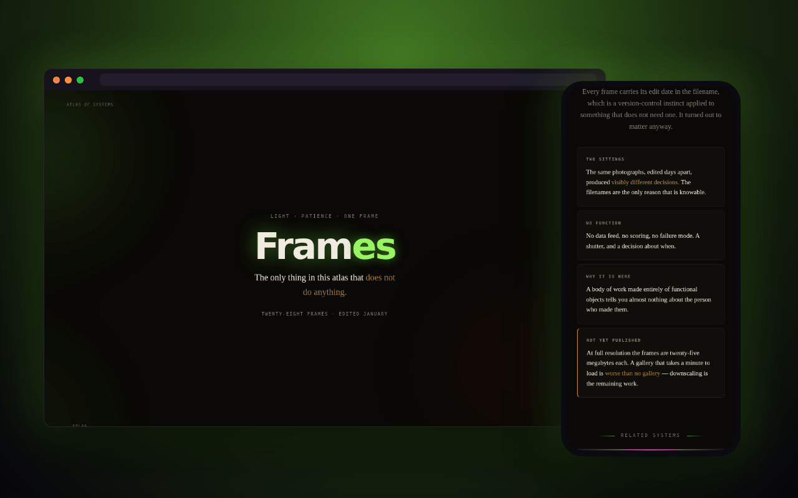

An engineering habit, sideways
Every frame carries its edit date in the filename: a version-control instinct applied to something that doesn't need one. It turned out to matter anyway.
Twenty-eight photographs, kept as a series. The only thing in the atlas that doesn't do anything, on purpose.

A single series, edited across two sittings in January: twenty-eight frames that survived the cut, out of considerably more that didn't. A body of work made entirely of functional objects tells you almost nothing about the person who made them. This is the part that doesn't function.
Every frame carries its edit date in the filename: a version-control instinct applied to something that doesn't need one. It turned out to matter anyway.
The same photographs, edited days apart, produced visibly different decisions. The filenames are the only reason that's knowable.
No data feed, no scoring, no failure mode. A shutter, and a decision about when.
At full resolution the frames are around twenty-five megabytes each, and a gallery that takes a minute to load is worse than no gallery. Downscaling is the remaining work, stated here rather than quietly left out.